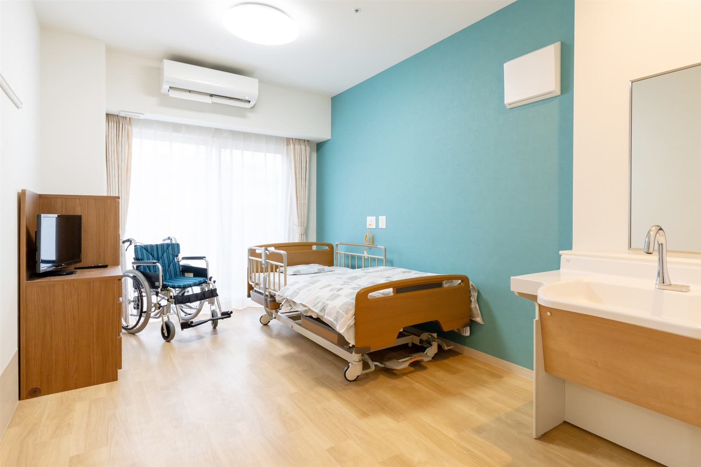

Online Consultation
オンライン経営相談
初回のご相談は無料です。介護経営に関するご相談を、オンライン面談（Zoom・お電話）で承ります。遠方の方や、まずは気軽に相談したいという方もお気軽にご利用ください。


Such as...
こんな時にご相談ください
「職員がなかなか定着しない」「稼働率が伸び悩んでいる」「後継者をどうするか決めかねている」——現場を実際に見てきたからこそ分かる課題は少なくありません。一人で抱え込む前に、まずは状況をお聞かせください。
Topics
主な相談内容
Flow
ご相談の流れ
STEP 01
フォームからお申込み
お問い合わせフォームより、ご相談内容とご希望の日時をお知らせください。
STEP 02
日程調整のご連絡
メールまたはお電話にて、面談日時を調整させていただきます。
STEP 03
オンライン面談を実施
Zoomまたはお電話にて、60分程度を目安にご相談を承ります。
FAQ
よくあるご質問
本当に無料ですか？
はい、初回のオンライン相談は無料です。ご相談内容によって継続的なコンサルティングをご提案することもありますが、その場合も費用は事前にご説明し、ご納得いただいた上で契約に進みます。相談だけして終了しても問題ございません。
Zoomを使ったことがなくても大丈夫ですか？
問題ございません。事前に接続方法をご案内いたしますし、Zoomのご利用が難しい場合はお電話でのご相談も承っております。
相談後にしつこく営業されませんか？
無理な勧誘は行いません。ご相談内容を伺った上で、お役に立てる場合のみご提案いたします。継続をご希望されない場合は、その場でお伝えいただければ結構です。
どんな介護施設・事業所でも相談できますか？
老人ホーム、デイサービス、訪問介護・訪問看護など、種別を問わずご相談いただけます。全国どこからでもオンラインで対応可能です。
相談時間はどれくらいですか？
60分程度を目安としていますが、ご相談内容に応じて調整いたします。まずはお気軽にお申し込みください。